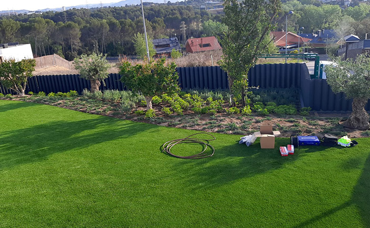
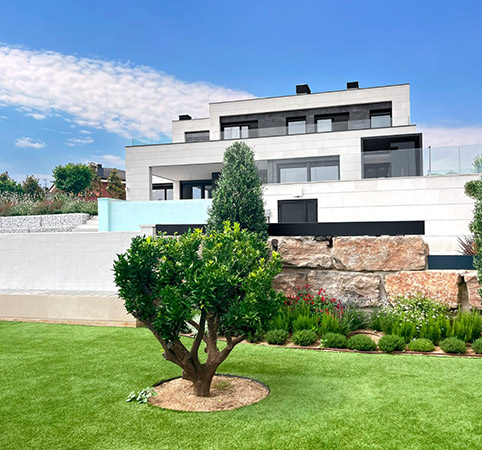
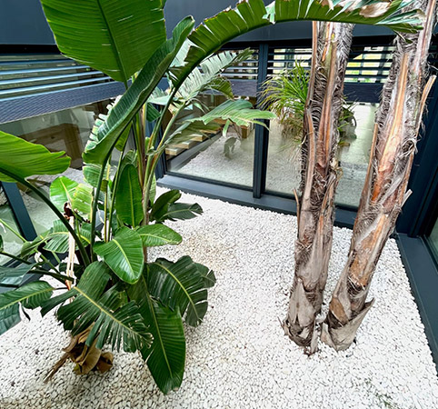

Cesped artificial
Césped Artificial de Alta Calidad:
Uno de los aspectos más notables de este proyecto de paisajismo es la introducción de césped artificial de alta calidad en áreas públicas y espacios verdes del municipio. Este césped artificial es una solución estéticamente atractiva que requiere un mantenimiento mínimo y no necesita riego constante. Además, ha eliminado la necesidad de pesticidas y herbicidas, promoviendo un entorno más saludable y sostenible.
Gaviones para la Protección y el Diseño:
Para garantizar la estabilidad de las áreas de paisajismo y reducir la erosión del suelo, se han incorporado gaviones en ciertas zonas del proyecto. Estos gaviones son estructuras de malla metálica rellenas de piedras y rocas, que no solo funcionan como elementos de protección, sino que también añaden un toque de diseño y textura al paisaje. Los gaviones permiten el drenaje adecuado y ayudan a prevenir problemas de inundación en la vivienda.
Riego Ecológico y Sostenible:
La gestión del agua es un componente esencial de este proyecto de paisajismo. Se ha implementado un sistema de riego ecológico que utiliza tecnología de última generación para garantizar un uso eficiente del agua. La programación automática y la monitorización en tiempo real permiten ajustar los niveles de riego según las condiciones climáticas y las necesidades reales de las plantas, lo que reduce significativamente el desperdicio de agua.
Plantación de Árboles Nativos:
La plantación de árboles es una parte esencial de este proyecto. Se han seleccionado cuidadosamente especies de árboles nativos que no solo embellecen el entorno, sino que también contribuyen a la biodiversidad local. Los árboles proporcionan sombra, mejoran la calidad del aire y sirven como hábitat para la fauna local, promoviendo un equilibrio ecológico en la zona.
El proyecto de paisajismo en Sant Quirze del Vallès, liderado por un jardinero comprometido con la sostenibilidad y la belleza, ha transformado la apariencia del municipio y ha fomentado la responsabilidad ambiental en la vivienda. La introducción de césped artificial, gaviones, riego ecológico y la plantación de árboles ha mejorado la calidad de vida de los residentes y visitantes, creando un entorno más agradable y saludable. Este proyecto es un ejemplo inspirador de cómo la pasión por la jardinería y el respeto por la naturaleza pueden cambiar positivamente una vivienda.

Arbusto

Jardin interno